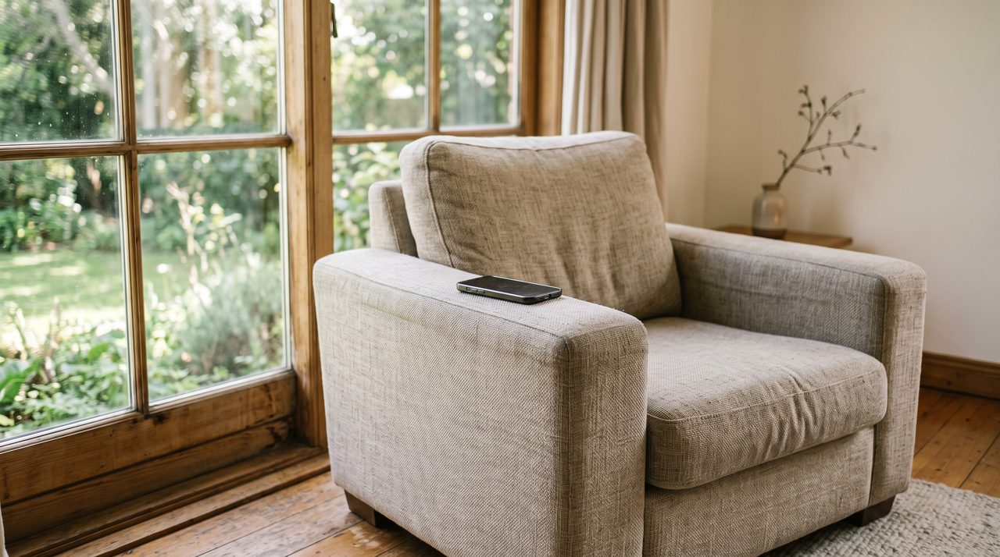
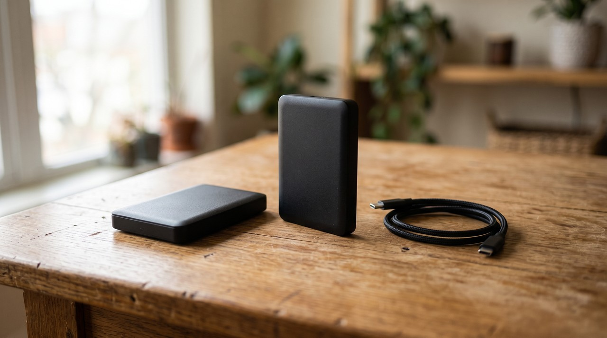

To save a voice forever, record 10 to 20 minutes of the person talking naturally in a quiet room. Ask their permission first and get them to tell stories instead of reading scripts. Store the files as WAV in at least two places and keep the original recordings for life. Voice technology improves all the time, and these raw files are what any future use, like a possible clone, will be built from.
Written by Inam, who built VoiceClone. I record and train voices for my own videos, and my other engineering notes are on designesh.com. Last updated 17 September 2026.
You probably have thousands of photos of your parents but almost nothing of how they sound. Most families notice this problem exactly once, right at the point where they can no longer fix it. The fix is actually small. It takes ten to twenty minutes of the person talking, recorded properly on one afternoon, and kept as plain WAV files in two different places.
Get their permission to record 10 to 20 minutes of them telling their own stories, and keep the original files forever.
I have a folder on my disk with about 22 minutes of my own voice. It is recorded clean, labeled, and backed up twice. I made it for a practical reason because it is the reference bank that my own voice clone is built from. But while I was recording it, a heavier thought hit me and never really went away. Photos got saved because saving them became effortless, but voices never got their moment.
This is the article I wish someone had sent me years earlier. It is about fixing that problem while it is still just a Tuesday afternoon kind of task.
What is voice banking, and did it start with AI?
Recording a voice to keep it has a serious history, and it is older than the current AI fuss. People facing illnesses like ALS that take their speech have been banking their voices for years. The speech therapy world splits this job into two things, and it helps to know them apart.
Voice banking means you record a set of phrases so software can build a synthetic version of that voice, which a speech device can then use to say anything typed into it. The phrase count is large, and it varies by provider from about 50 phrases up to 3,500. Message banking means you record real phrases in the person's natural voice and keep those recordings as themselves, so "I love you, sweetheart" plays back in the actual voice instead of being rebuilt by a machine.
The advice from that medical world is the part everyone should steal. Team Gleason puts it plainly when they say banking should be done as early as possible while the voice is still strong. Nobody has ever regretted recording a voice too soon.
What AI changed is only what a banked voice can become later. The bank itself is the actual gift, and that part has worked well for decades.
What should you record, and should it be a script?
My instinct as an engineer was to prepare sentences that cover every sound. For clinical voice banking, such scripts genuinely exist. But for saving a person's memory, scripts are the wrong tool because nobody's mother sounds like herself when she is reading a list. You want something closer to message banking, which is the performance she has given her whole life.
| What to record | Roughly how long | Why this is the part that matters |
|---|---|---|
| The stories they always tell | 5 to 10 minutes | Every parent has four or five, and the polish on those stories is their voice at its most them |
| How they say the names | 1 to 2 minutes | Your name, the family names, the nickname only they use. It sounds small and it is the largest thing in the folder |
| Ordinary talking | 5 to 10 minutes | Their day, their opinion on the neighbor's construction, anything. The unperformed voice is the one your memory will want |
Ask them for the story of how they met or the story from the village. Pick the one you can recite yourself because you have heard it so often. You want the laugh that interrupts the story, and the pause they take before the good part.
Ten to twenty minutes across one or two sittings covers everything richly. The recording rules are the same ones that make any voice sample good. You need a quiet room, the phone or mic close to them, and natural talking. Keep the breaths and pauses in the audio, because those are half of who the person is.
How do you store a voice recording for decades?
Whatever you end up recording, export or keep it as WAV. This is a plain uncompressed format. Storage is cheap, so this folder will not have a size problem. Name the files with the person and the date, because a folder full of numbered files stops meaning anything within a year.
Then you need to copy it. The Library of Congress publishes plain guidance for personal digital audio, and it is stricter than what most people do at home. Keep at least two copies, and more if you can. Put them in places that are physically far apart so a single flood or theft cannot take both. Check once a year that the files still open, and make fresh copies onto new media about every five years. The disk will fail long before the format does.

You should keep the raw recordings forever, even if you make something from them later. Voice technology improves yearly, and my own clone measures about 96 percent of me with today's training. Those same 22 minutes will build something better in five years without the person recording another word. The original files are like photo negatives, and everything in the future will be printed from them.
Do you need permission to record a family member?
Always record people with their clear yes, including your own parents, and even when the reason is love. This is partly the same consent line that governs all voice recording. But partly it is something better, because asking them turns out to be a lovely conversation.
Telling them "I want to keep your voice, will you tell me the old stories properly" is one of the warmer sentences a parent can hear from their child. Nothing about this project needs to be a secret. A thing done for love especially should not be hidden.
Where does voice cloning fit, if it ever does?
You may have noticed this article comes from a site about voice cloning, but I have barely mentioned it. That is on purpose. The bank matters whether anyone ever clones anything or not. Plenty of people should stop at the bank, because replaying the old stories is already the whole treasure.
Someday you or the person might want the voice to read a grandchild a book. The clean recordings you made are exactly what a trained clone is built from. This happens on your own computer and gets uploaded nowhere, which is the only arrangement I would accept for a file this personal. I have a free app that can show you what that sounds like with your own voice. If you want to do it for someone else, the rule stays what it has always been on my site. It is their voice, so you need their clear yes.
FAQ
How do I preserve a parent's voice?
Get their permission, then record 10 to 20 minutes of them talking naturally in a quiet room with the mic close to them. Let them tell their usual stories and have an ordinary conversation. Store the file as WAV in at least two places, and label it with their name and the date.
How much recording is enough to save a voice?
Ten clean minutes preserves a voice richly for memory and for any future use. More sittings will help, but one sitting is enough to matter enormously.
What format keeps a voice recording safe long term?
Use WAV because it is uncompressed, and copy it to at least two storage places kept physically apart. Check the files once a year, and copy them onto fresh media about every five years. Keep the originals permanently, even after you make anything from them.
Is it okay to clone a voice of someone who has passed away?
Legally, the commercial use of a deceased person's voice is restricted in more and more places. Personally, it is a family matter that deserves an actual family conversation. The recordings themselves carry no such weight. This is one more reason why building the bank with permission in life is the right first step.
What should you do this weekend?
Do not build a studio and do not research microphones. Sit with the person this weekend, put your phone on the table close to them, and say that you want to keep their voice and hear the old stories properly. Two cups of tea later, you will own a recording your whole family will one day count among its most valuable files. It will only cost you an afternoon you would have loved anyway.
Sources: Team Gleason's "Voice and Message Banking" resource page, and the Library of Congress "Preserving Your Digital Memories" personal archiving brochure, section on keeping personal digital audio. Both read on 17 September 2026.
Hear your own voice come back.
The free Windows app clones and fully trains one voice, yours, on your own PC. No account, no upload, and the download starts right away.